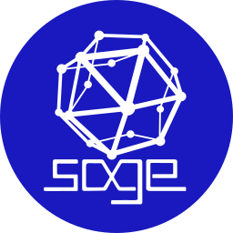
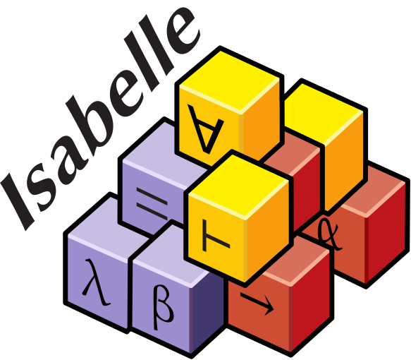
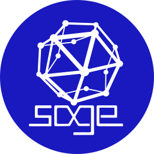
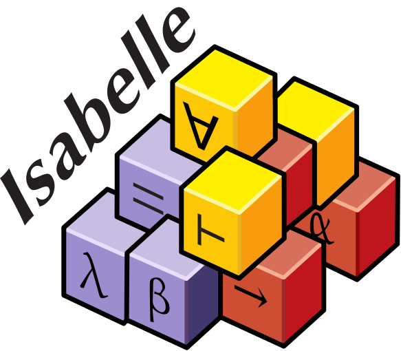

Je m'appelle Salomé RABEC, je suis étudiante en première année de master de cryptographie à Rennes, après
avoir validé une licence de mathématiques.
J'aime apprendre à utiliser les logiciels informatiques et coder pour créer des outils qui m'aident mes proches et moi.
Je suis aussi passionnée par les langages et les symboles, ayant étudié les idéogrammes japonais pendant des années.
Je souhaite maintenant m'initier à la cryptographie dans le but de savoir protéger les données et de participer à la création d'outils sûrs et fiables pour tous.
 


